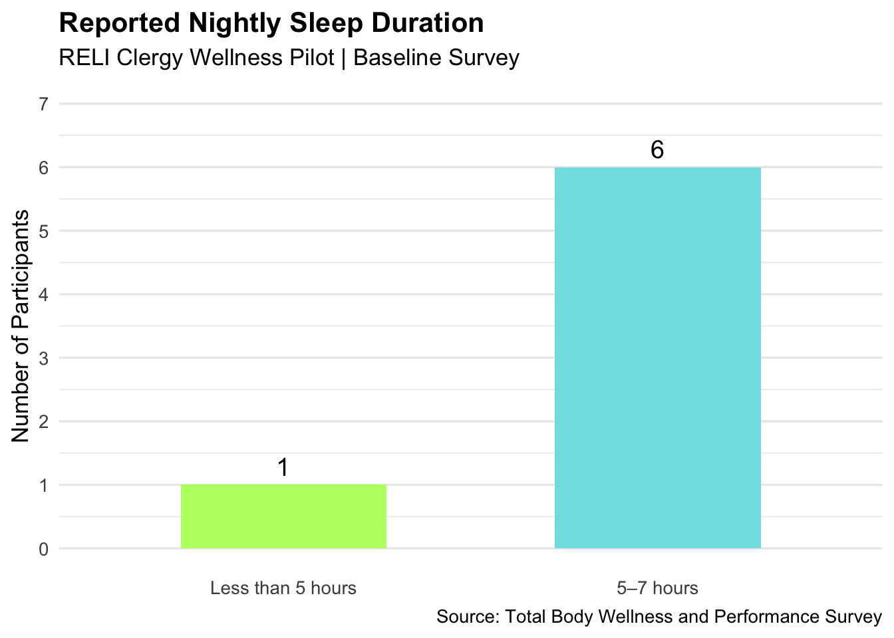
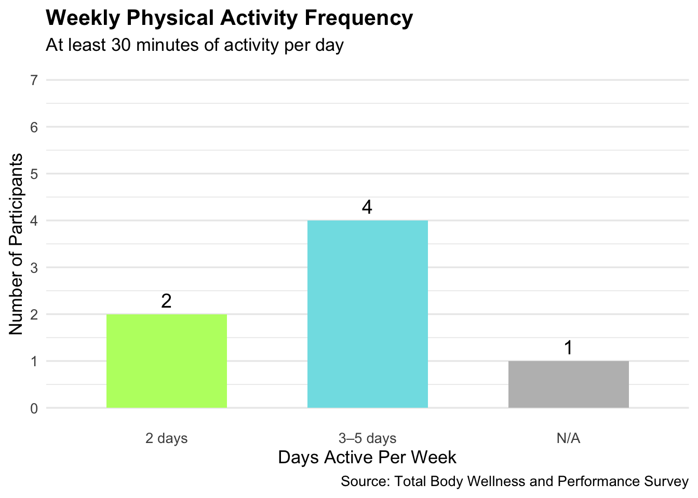
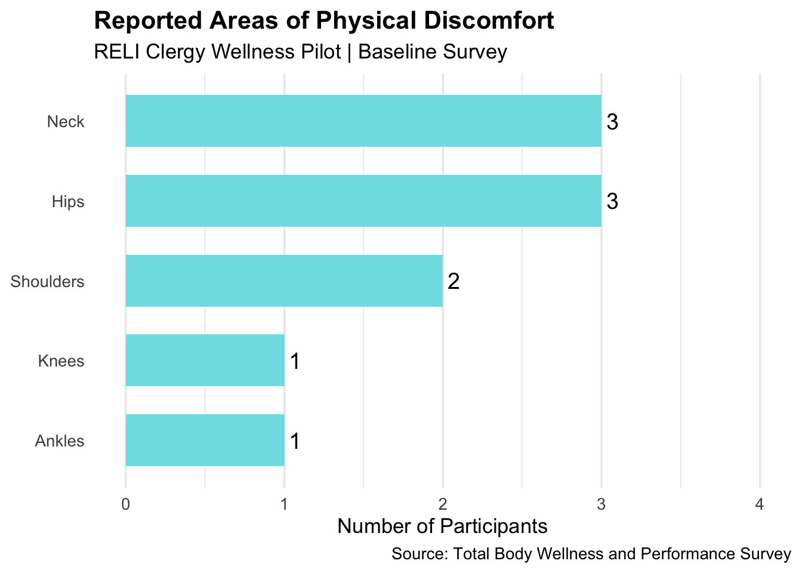
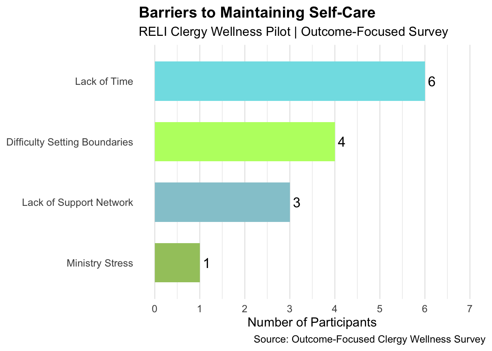
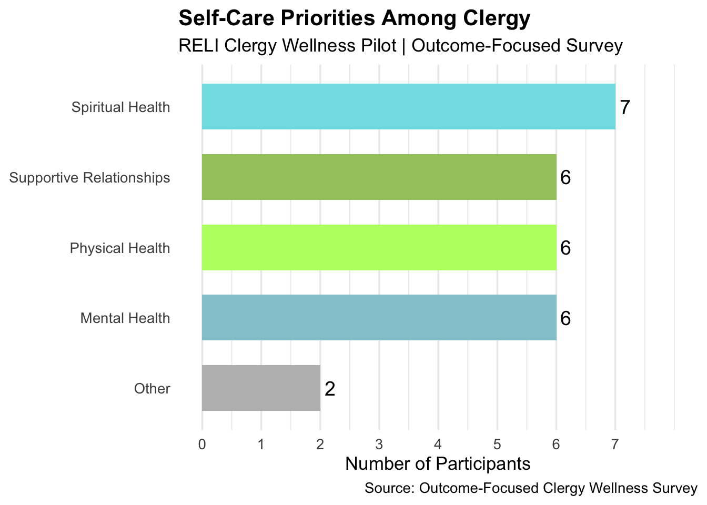
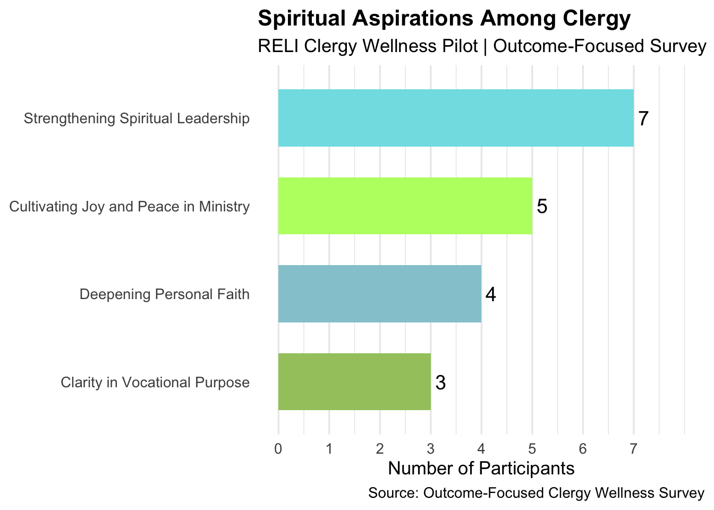
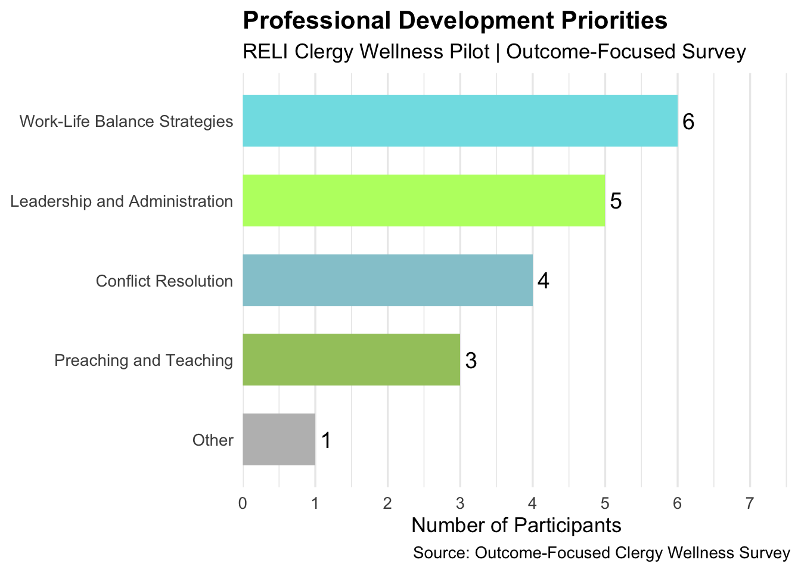

Clergy Wellness
Understanding the Health of Faith Leader
Clergy are often expected to provide emotional, spiritual, and community support while navigating significant responsibilities of their own.
This section examines the physical, emotional, and spiritual wellness needs of faith leaders, including the challenges of balancing ministry responsibilities with personal health.
Areas of Focus
- Physical health and wellness behaviors
- Sleep quality and rest
- Emotional well-being and stress
- Work-life balance and self-care
- Access to wellness resources
Why Clergy Wellness Matters
Supporting clergy wellness is an important consideration for faith-based organizations and public health practitioners. Understanding the needs of faith leaders can inform programs that promote healthier and more sustainable ministry.
Understanding Holistic Clergy Wellness
Faith leaders occupy a unique position at the intersection of spiritual leadership, community service, and personal responsibility. Beyond providing religious instruction, clergy frequently serve as counselors, advocates, organizational leaders, and sources of emotional support for individuals experiencing personal or community challenges.
While these responsibilities can provide a strong sense of purpose and fulfillment, they may also create competing demands on clergy members’ physical health, emotional well-being, and spiritual development.
Clergy wellness must therefore be understood as a multidimensional public health concern. Physical health influences an individual’s capacity to maintain daily activities, manage occupational demands, and sustain healthy behaviors. Spiritual wellness, meanwhile, encompasses dimensions of meaning, purpose, personal growth, and the relationship between religious identity and well-being.
These dimensions are interconnected. A clergy member may experience strong spiritual fulfillment while simultaneously struggling with inadequate sleep, limited physical activity, or difficulty establishing boundaries between ministry and personal life.
Understanding these experiences requires an evaluation approach that considers both measurable health behaviors and the broader personal and professional circumstances influencing them.
Two Surveys, Two Perspectives
The RELI Clergy Wellness Pilot incorporated two complementary survey instruments to explore different dimensions of participants’ well-being.
Total Body Wellness Survey: Understanding Physical Health
The Total Body Wellness Survey examined participants’ physical health, wellness behaviors, and related health concerns.
Its questions addressed areas such as physical activity, sleep, discomfort, emotional health, and other factors that may influence overall wellness.
From a public health perspective, this instrument helped establish a baseline understanding of participants’ health behaviors and potential areas of concern. These findings provide context for understanding why physical wellness education, activity monitoring, and individualized support may be valuable components of clergy wellness programming.
Part I: Physical Health and Wellness

Understanding Physical Wellness Among Clergy
The Total Body Wellness and Performance Survey was designed to assess the physical health, lifestyle behaviors, and wellness needs of clergy participating in the RELI pilot program.
The survey examined several dimensions of health, including sleep, physical activity, emotional well-being, and physical discomfort.
These measures are significant because the demands of ministry may influence clergy members’ opportunities to prioritize rest, exercise, and preventive health practices.
Key Physical Health Findings
The baseline survey included seven clergy participants, with an average reported age of 55.3 years.
The findings highlighted several areas relevant to physical wellness:
- Sleep: Six of seven participants reported sleeping approximately five to seven hours per night.
- Physical activity: Four of seven reported exercising three to five days per week.
- Emotional health: Three participants reported some level of anxiety.
- Physical discomfort: Three participants reported neck discomfort.
These findings provide a descriptive picture of selected health concerns and behaviors within the pilot cohort.
Visualizing Physical Wellness
Interpreting Sleep Patterns
Six of the seven participants (85.7%) reported sleeping approximately five to seven hours per night, while one participant (14.3%) reported sleeping fewer than five hours.
These findings suggest that sleep duration is an important consideration for clergy wellness programming. All seven participants reported sleep durations below the seven to nine hours generally recommended for adults in this age group.
Although the survey does not establish the reasons for these patterns, occupational demands, stress, and competing personal responsibilities may be relevant factors for future investigation.
These baseline findings provide context for examining Fitbit-derived sleep measurements during the RELI intervention, including whether objectively recorded sleep patterns align with participants’ self-reported experiences.
Physical Activity Frequency

Interpreting Physical Activity Patterns
Four of the seven participants (57.1%) reported engaging in at least 30 minutes of physical activity on three to five days per week. Two participants (28.6%) reported being active two days per week, while one response was recorded as not applicable (14.3%).
These findings indicate variation in reported physical activity frequency within the cohort. Although most participants reported some regular activity, the survey did not establish whether their activity levels consistently met recommended weekly physical activity guidelines.
From a public health perspective, these baseline findings highlight an opportunity to support sustainable physical activity habits through individualized wellness coaching and monitoring.
The survey results also provide context for examining changes in Fitbit-derived steps and active-zone minutes during the RELI intervention.
Physical Discomfort and Mobility

Interpreting Physical Discomfort
The Total Body Wellness and Performance Survey identified several areas of self-reported physical discomfort among the seven participating clergy members. Neck and hip discomfort were the most frequently reported concerns, each identified by three participants (42.9%). Shoulder discomfort was reported by two participants (28.6%), while knee and ankle discomfort were each reported by one participant (14.3%).
Two participants reported no discomfort in the assessed areas. Because respondents could identify multiple areas of discomfort, the reported frequencies are not mutually exclusive.
These findings suggest that physical wellness programming may benefit from incorporating mobility, flexibility, and individualized approaches to physical activity. However, the survey does not establish the severity, duration, or clinical causes of the reported discomfort.
From a public health perspective, understanding physical limitations is important when interpreting participants’ activity levels and designing appropriate wellness interventions. Such considerations may also help contextualize differences in Fitbit-derived activity measurements during the RELI pilot.
Emotional Wellness and Anxiety
Although the Total Body Wellness and Performance Survey primarily examined physical health behaviors, it also assessed participants’ experiences with anxiety.
Four of the seven clergy participants (57.1%) reported experiencing no anxiety. The remaining three participants (42.9%) reported varying levels of anxiety, with one participant each selecting levels 1, 3, and 4 on a five-point scale.
These findings suggest that emotional wellness deserves consideration alongside physical activity, sleep, and mobility. While most participants did not report anxiety, the variation in responses highlights the importance of recognizing individual differences in emotional well-being.
From a public health perspective, emotional wellness may be influenced by multiple factors, including occupational responsibilities, social support, personal circumstances, and access to appropriate mental health resources. However, the survey does not establish the underlying causes of participants’ reported anxiety.
The findings reinforce the value of a holistic approach to clergy wellness that considers both physical and emotional health, rather than treating them as separate concerns.
Public Health Interpretation
The findings suggest that clergy wellness programming may benefit from addressing multiple health dimensions rather than focusing exclusively on exercise.
Sleep, physical discomfort, and emotional well-being may influence an individual’s ability to maintain consistent physical activity and self-care routines.
However, the small sample size limits generalizability, and the survey findings do not establish that ministry responsibilities caused the reported health concerns.
From Physical Health to Ministerial Wellness
The Total Body Wellness and Performance Survey identified several health-related considerations among participating clergy, including sleep duration, physical activity, musculoskeletal discomfort, and emotional well-being.
However, understanding these health indicators requires consideration of the broader circumstances in which clergy live and work.
Faith leaders often navigate competing responsibilities involving congregational care, organizational leadership, community engagement, and personal relationships. These responsibilities may influence the time, resources, and support available for maintaining healthy routines.
The Outcome-Focused Clergy Wellness Survey provides an opportunity to examine these broader experiences, including barriers to self-care, leadership development needs, and the role of spiritual and professional support.
Together, these findings help connect individual wellness behaviors with the organizational and interpersonal dimensions of clergy health.
Outcome-Focused Clergy Wellness Survey: Understanding Spiritual and Ministerial Well-Being
The Outcome-Focused Clergy Wellness Survey explored participants’ experiences with ministry responsibilities, self-care, leadership development, coaching, and personal or spiritual growth.
Unlike the Total Body Wellness Survey, which emphasized health behaviors and conditions, this instrument provided insight into the professional and personal circumstances surrounding clergy wellness.
The survey addressed challenges such as competing responsibilities, time management, work-life balance, and access to supportive relationships.
These areas are particularly relevant to public health because wellness behaviors do not occur in isolation. An individual’s ability to prioritize health may be influenced by organizational expectations, occupational demands, available resources, and social support.
Part II: Spiritual and Ministerial Wellness

Understanding the Demands of Ministry
The Outcome-Focused Clergy Wellness Survey examined the personal, professional, and spiritual dimensions of clergy well-being.
While the Total Body Wellness Survey emphasized health behaviors and physical wellness, this instrument explored the responsibilities and experiences that may influence clergy members’ ability to maintain healthy routines.
Key Areas of Investigation
The survey explored:
- Time management and boundary-setting
- Work-life balance and self-care
- Leadership development and professional responsibilities
- Coaching, mentorship, and peer support
- Spiritual renewal and personal growth
Barriers to Maintaining Self-Care

Interpreting Barriers to Self-Care
The Outcome-Focused Clergy Wellness Survey identified several anticipated challenges to maintaining consistent self-care routines among participating clergy. Lack of time was the most frequently reported barrier, selected by six of seven participants (85.7%), followed by difficulty setting boundaries, identified by four participants (57.1%).
Three participants (42.9%) identified a lack of supportive networks, while one participant (14.3%) selected ministry-related stress. Because respondents could select multiple barriers, these categories are not mutually exclusive.
These findings highlight the relationship between personal wellness and the broader responsibilities associated with ministry. Although clergy may recognize the importance of self-care, competing demands and limited support can create challenges in maintaining consistent wellness practices.
From a public health perspective, these findings suggest that clergy wellness initiatives should extend beyond individual health education to consider organizational expectations, boundary-setting, time management, and supportive relationships.
The findings provide a rationale for incorporating leadership coaching, peer support, and individualized wellness planning into faith-based health promotion initiatives.
Self-Care Priorities Among Clergy

Interpreting Clergy Wellness Priorities
All seven participants (100%) identified spiritual health, including prayer, meditation, and reflection, as a self-care priority for the following six months.
Physical health, mental health, and building supportive relationships were each selected by six participants (85.7%). Two participants (28.6%) identified additional priorities outside these categories.
These findings suggest that participating clergy viewed wellness as a multidimensional concern encompassing spiritual, physical, psychological, and social well-being.
Importantly, the emphasis on spiritual health did not exclude interest in other forms of self-care. Instead, participants expressed overlapping priorities, highlighting opportunities to integrate conventional health promotion strategies with practices already valued within faith communities.
When considered alongside the previously reported barriers to self-care, these findings reveal a potential gap between wellness intentions and the practical ability to maintain healthy routines.
For faith-based public health programming, this distinction is significant. Effective interventions may benefit from addressing the organizational and personal barriers that prevent clergy from translating their wellness priorities into sustainable behaviors.
Spiritual Aspirations and Leadership Development

Interpreting Spiritual Aspirations
The Outcome-Focused Clergy Wellness Survey revealed a strong interest in spiritual development among participating faith leaders.
All seven participants (100%) identified strengthening spiritual leadership as an aspiration. Five participants (71.4%) expressed a desire to cultivate greater joy and peace in ministry, while four participants (57.1%) prioritized deepening their personal faith. Three participants (42.9%) identified finding clarity in their vocational purpose as an important goal.
These findings suggest that participants’ aspirations extended beyond professional effectiveness to include personal fulfillment, spiritual renewal, and a more sustainable relationship with ministry.
The emphasis on cultivating joy and peace is particularly relevant when considered alongside previously identified challenges involving time constraints, boundary-setting, and self-care.
From a public health perspective, spiritual wellness may serve as a meaningful component of broader health promotion initiatives in faith-based settings. Integrating spiritual development with practical wellness strategies may help align programming with participants’ stated priorities.
However, these baseline responses represent participants’ aspirations rather than demonstrated improvements in spiritual well-being or leadership effectiveness.
Professional Development Priorities

Interpreting Professional Development Needs
The Outcome-Focused Clergy Wellness Survey identified several professional development priorities among participating faith leaders.
Work-life balance strategies emerged as the most frequently selected area, identified by six of seven participants (85.7%). Five participants (71.4%) expressed interest in strengthening leadership and administrative skills, while four participants (57.1%) prioritized conflict resolution. Three participants (42.9%) selected preaching and teaching, and one participant (14.3%) identified an additional area of professional development.
These findings suggest that participating clergy viewed professional development as extending beyond traditional ministerial responsibilities. Their interests included practical skills for managing competing demands, navigating interpersonal challenges, and maintaining sustainable leadership practices.
The emphasis on work-life balance is particularly significant when considered alongside previously reported difficulties with time management and boundary-setting. Together, these responses suggest that clergy recognize a need for strategies that support both professional effectiveness and personal well-being.
From a public health perspective, leadership development may complement wellness programming by addressing organizational and occupational conditions that influence self-care. Training in delegation, communication, conflict resolution, and boundary-setting could help create more supportive environments for clergy health.
These findings provide a rationale for integrating professional coaching with physical and spiritual wellness initiatives, although the survey does not establish whether these approaches improved participant outcomes.
Understanding the Findings
The survey findings will be examined through a combination of quantitative figures and qualitative thematic analysis.
Particular attention will be given to barriers to self-care, challenges associated with ministry responsibilities, and the role of supportive relationships in promoting wellness.
Public Health Interpretation
Clergy wellness is influenced not only by personal health behaviors but also by occupational expectations, social support, and organizational conditions.
These findings provide an opportunity to consider how faith-based institutions can support clergy through policies, resources, and leadership practices that promote sustainable ministry.
Why Both Surveys Matter
Together, the two instruments provide a more comprehensive picture of clergy wellness.
The Total Body Wellness Survey helps identify what health behaviors and concerns are present, while the Outcome-Focused Clergy Wellness Survey provides insight into the responsibilities, experiences, and support needs that may influence those behaviors.
This distinction is important because identifying a health concern does not necessarily explain the circumstances contributing to it.
For example, limited sleep may be identified through a physical wellness assessment, while information about ministry demands and difficulty maintaining boundaries can provide additional context for interpreting that concern.
Qualitative Findings: Voices of Clergy
While quantitative survey responses identified common wellness priorities and barriers, open-ended responses provided additional insight into participants’ personal experiences, expectations, and desired outcomes.
The following themes were identified through a descriptive review of responses to the Outcome-Focused Clergy Wellness Survey.
Theme 1: Accountability and Support
Participants identified accountability, encouragement, and shared experiences as valuable aspects of group coaching.
Responses emphasized the importance of supportive relationships, opportunities to exchange personal experiences, and encouragement from others navigating similar ministerial responsibilities.
These findings suggest that peer connection may be an important component of clergy wellness programming.
Theme 2: Boundary-Setting and Time Management
Participants identified boundary-setting, time management, and self-reflection as challenges in pursuing their personal and professional goals.
Responses also highlighted interest in distinguishing meaningful self-care from superficial wellness practices.
These concerns reinforce the quantitative findings identifying limited time and difficulty establishing boundaries as common barriers to self-care.
Theme 3: Vocational Clarity and Personal Growth
Participants expressed a desire for greater clarity regarding their professional, personal, and ministerial calling.
Desired outcomes included setting realistic goals, strengthening consistency in personal wellness routines, and reducing feelings of anxiety and hurry.
These responses illustrate how clergy wellness extends beyond physical health to include purpose, emotional well-being, and sustainable leadership.
Theme 4: Individualized Coaching and Goal Achievement
When asked about one-on-one coaching, participants expressed interest in personalized goal-setting, motivation, accountability, new perspectives, and practical support.
Their responses suggest that individualized coaching may complement group programming by allowing participants to address their specific goals and challenges.
Qualitative Interpretation
Taken together, these themes suggest that participating clergy sought more than information about healthy behaviors. Their responses emphasized the importance of practical strategies, supportive relationships, personal reflection, and individualized guidance.
The qualitative findings also complement the quantitative survey results by illustrating how professional responsibilities, spiritual aspirations, and personal wellness needs intersect.
These themes represent a descriptive synthesis of the reported responses rather than a formal qualitative coding analysis. The small cohort size and limited response detail should be considered when interpreting the findings.
Although the surveys do not establish causal relationships between these factors, examining their findings together can help identify opportunities for more responsive wellness programming.
The RELI evaluation therefore approaches clergy wellness not simply as a matter of individual health choices, but as an issue shaped by the interaction of personal behaviors, professional responsibilities, spiritual identity, and institutional support.